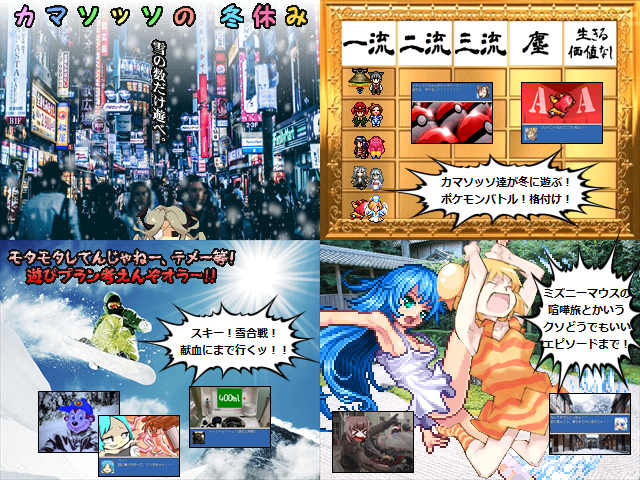

 |
|
| 作者：池田さん | |
| ツクール：2000 | |
| ジャンル：日常系はちゃめちゃギャグ紙芝居 | |
| 配信/投稿：可/可 | |
| keyword：「オトナ」と呼ばれる全ての夢見る子供達に捧ぐ、たった１つのおバカ活劇 | |
| 投票：投票はこちら | |
| 作者コメント： 2018夏の陣に提出したシリーズ完結編【カマソッソの最期】ですっ飛ばされた「冬休み編」を紙芝居化しました。 番外編みたいな４作目、マジでこれでおわり！！閉廷！！ |
|
| 管理人コメント： 冬休みもドッタンバッタン大騒ぎ！ |
|
| ダウンロード / 感想掲示板 | |
| 前の作品 / 次の作品 / TOPへ戻る | |